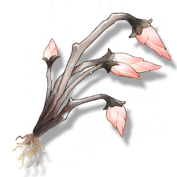

Coral Oats
Resources

Material for cooking.
A filter-feeding plant that drifts in freshwater, unable to survive in seawater.
Changes in osmotic pressure cause Coral Oats to rapidly grow roots, so in the near-sea areas of the river, you can often see patches of rooted Coral Oats.